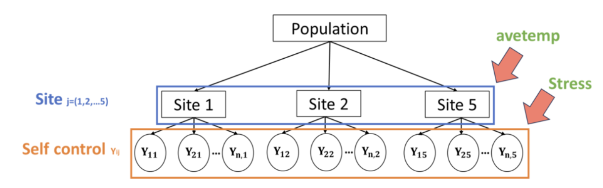
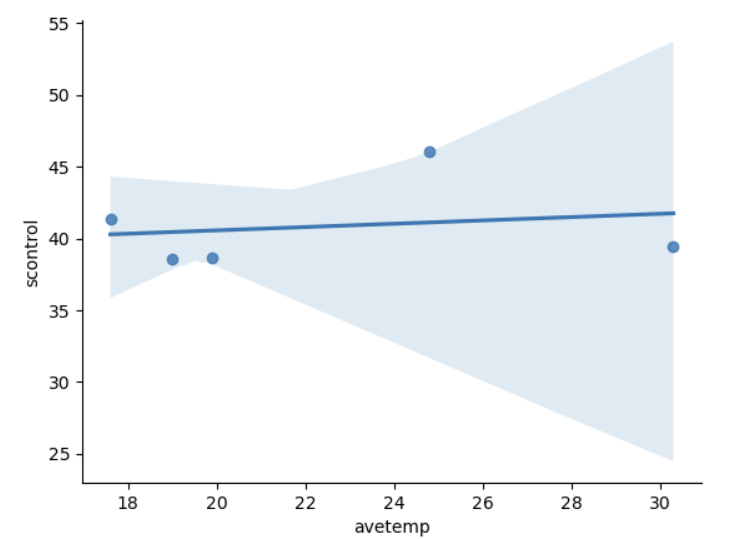
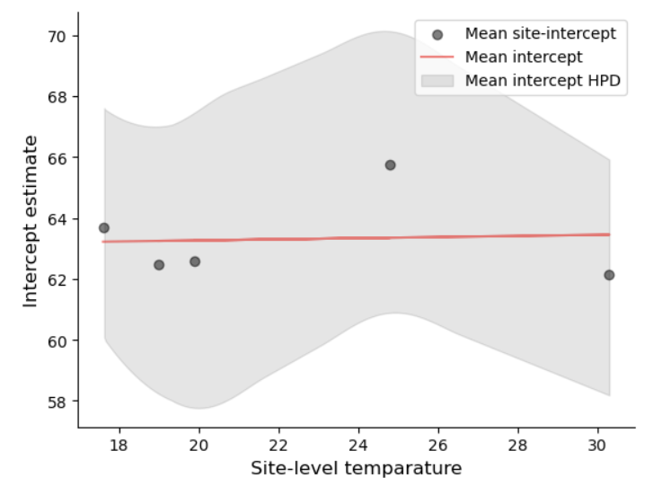
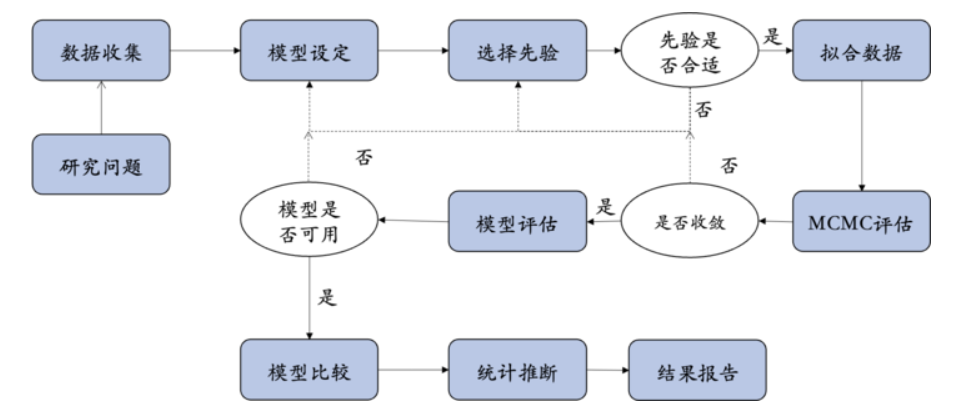

分层模型中的组层面预测因子(group-level predictors)#
🤔 在上面的例子中，考虑了个体压力对于自我控制的影响，并且分不同站点来考虑这一问题。然而，我们是否考虑过不同站点的其他特性对于自我控制的影响呢？
例如，原数据想要探究的核心问题为温度和社会行为的关系，不同站点对应了不同国家和地区，而这些地区的平均气温是否会对自我控制产生影响呢？
由于该数据的收集时间为夏季，因此在查阅了每一站点的夏季平均气温后，将其作为组层面的预测变量
组层面预测因子(group-level predictors)是指在组间(站点)层面的特征，这是相对于组内预测因子(group-level predictors)而言的。
例如，个体压力分数(stress)是组内预测因子。这个值在不同个体间具有不同值。
而地区的夏季平均温度是组层面预测因子。这些值在不同站点(site)间不同，但是在站点内的个体间保持相同。

构建具有组层面预测因子的分层模型
在变化截距模型的基础上继续添加：
先前的变化截距模型：
prior
likelihood
🤔 如果考虑组层面预测因子，那么该变量该放在哪一层(Layer)？
由于组层面预测因子是组间(站点\(j\))层面的特征，因此该变量主要影响截距在站点间的变化。
公式写作：\(\beta_{0j}=\gamma_0+\gamma_1U_j\)
其中，\(U_j\)是站点\(j\)的组层面预测因子
\(\gamma_1\)是组层面预测因子\(U_j\)的回归系数；而\(\gamma_0\)是站点间变化的截距
因此，每个站点的截距\(\beta_{0j}\)，受到组层面预测因子\(U_j\)的影响
也可以写作\(\mu_{ij}=\beta_{0j}+\beta_1X_{ij}=(\gamma_0+\gamma_1U_j)+\beta_1X_{ij}\)
类似地，如果是认知实验也可以构建组层面预测因子的分层模型。在认知实验中，被试层面的因素可以作为组层面预测因子进行考量。
#选择需要的变量
df_temp =df_first5[["site_idx","obs_id","Site","stress","scontrol"]].reset_index(drop=True)
levels = df_temp['Site'].unique()
#生成各站点的夏季平均气温
level_mapping = {
levels[0]: 17.6,
levels[1]: 24.8,
levels[2]: 19.9,
levels[3]: 30.3,
levels[4]: 19
}
#将气温信息合并到数据框中
df_temp['avetemp'] = df_temp['Site'].map(level_mapping)
df_temp
夏季平均气温对自我控制平均分的影响
注意：由于只考虑了5个站点的数据，因此只有少量的5个数据点
sns.regplot(x="avetemp", y="scontrol", data=df_temp.groupby("Site").mean())
sns.despine()

总的公式
将\(\beta_{0j}=\gamma_0+\gamma_1U_j\)放入之前的公式，并且为新参数\(\gamma_0和\gamma_1\)引入先验分布：
prior
likelihood
另一种定义形式
在此之前我们认为\(\beta_{0j}=\beta_0+b_{0j}\)，即在共同截距的基础上增加组的变异
但在具有组层面（group-level）预测因子的模型中，实际上截距又会受到组层面的影响
相当于:\(\beta_0=\gamma+\gamma_1U_j\)
\(\beta_{0j}=\gamma_0+\gamma_1U_j+b_{0j}\)
进一步将\(\beta_{0j}\)放入\(\mu_{ij}=\beta_{0j}+\beta_1X_{ij}\)中：\(\mu_{ij}=(\gamma_0+\gamma_1U_j+b_{0j})+\beta_1X_{ij}\)
整理后：
prior
likelihood
# 采用第二种定义方式
#定义数据坐标，包括站点和观测索引
coords = {"site": df_temp["Site"].unique(),
"obs_id": df_temp.obs_id}
with pm.Model(coords=coords) as group_pred_model:
#定义全局参数
gamma_0 = pm.Normal("gamma_0", mu=0, sigma=50)
gamma_1 = pm.Normal("gamma_1", mu=0, sigma=5)
beta_1 = pm.Normal("beta_1", mu=0, sigma=5)
sigma_y = pm.Exponential("sigma_y", 1)
sigma_0 = pm.Exponential("sigma_0", 1)
#传入自变量、获得观测值对应的站点映射
x = pm.MutableData("x", df_temp.stress, dims="obs_id")
u = pm.MutableData("u", df_temp.avetemp.unique(), dims="site")
site_idx = pm.MutableData("site", df_temp.site_idx, dims="obs_id")
#定义组层面变量
beta_0 = pm.Deterministic("beta_0", gamma_0 + gamma_1*u, dims="site")
beta_0_offset = pm.Normal("beta_0_offset", 0, sigma=1, dims="site")
beta_0j = pm.Deterministic("beta_0j", beta_0 + sigma_0*beta_0_offset, dims="site")
#线性关系
mu = pm.Deterministic("mu", beta_0j[site_idx]+beta_1*x, dims="obs_id")
# 定义 likelihood
likelihood = pm.Normal("y_est", mu=mu, sigma=sigma_y, observed=df_temp.scontrol, dims="obs_id")
group_pred_trace = pm.sample(draws=5000, # 使用mcmc方法进行采样，draws为采样次数
tune=1000, # tune为调整采样策略的次数，可以决定这些结果是否要被保留
chains=4, # 链数
discard_tuned_samples= True, # tune的结果将在采样结束后被丢弃
random_seed=84735,
target_accept=0.99)
bambi code（补充内容）
当模型变得复杂， 在 PyMC 中定义分层模型将变得困难。
使用 Bambi 可以简化这一过程，其模型定义公式为
"stress + avetemp + (stress|Site)"只需要在原来分层模型的基础上加入组层面预测因子即可
group_pred_bmb = bmb.Model("scontrol ~ stress + avetemp + (stress|Site)",
df_temp,
categorical="Site")
group_pred_bmb.build()
group_pred_bmb.graph()
MCMC采样&后验参数估计
可以看到组层面预测因子（平均最低气温）的回归斜率\(\gamma_{1j}\)和截距\(\gamma_{0j}\)
az.summary(group_pred_trace,
var_names=["gamma_0","gamma_1","beta_0j","beta_1"])
group_pred_trace
后验预测回归线(站点平均气温的影响)
下面展示了组层面预测因子(夏季平均气温)与截距的关系
# 提取每个站点的温度
u = group_pred_trace.constant_data.u
# 提取组层面截距与温度的关系，体现在beta_0: beta_0 = gamma_0 + gamma_1 * u
beta_0 = group_pred_trace.posterior.beta_0.mean(dim=("chain","draw")).values
#提取每个站点的截距
beta_0j = group_pred_trace.posterior.beta_0j.mean(dim=("chain","draw"))
temp_hdi = az.hdi(group_pred_trace.posterior.beta_0j)
# 绘制每个站点的截距均值
plt.scatter(u, beta_0j,
color="black",
alpha=0.5,
label="Mean site-intercept")
#绘制截距与温度之间的关系
plt.plot(u, beta_0,
color="red",
alpha=0.5,
label="Mean intercept")
#绘制每个站点截距95%HDI
az.plot_hdi(
u, group_pred_trace.posterior.beta_0j,
hdi_prob=0.95,
fill_kwargs={"alpha": 0.1, "color": "k", "label": "Mean intercept HPD"}
)
#生成横坐标名称
plt.xlabel('Site-level temparature', fontsize=12)
# 生成纵坐标名称
plt.ylabel('Intercept estimate', fontsize=12)
plt.legend(loc="upper right")
sns.despine()

总结
本节课介绍了如何使用将分层模型扩展到一般线性模型，以及广义线性模型。
重点内容包括：
如何根据研究问题和假设来确定模型
如何在PyMC中定义分层模型，包括变化的截距、变化的斜率
如何通过模型比较来检验不同的假设
如何使用分层模型预测其他群体(站点)的结果
🎉🎉🎉🎉🎉 最后，本课程的正式内容也到此为止，感谢大家参与本门课程，希望大家能在实践中应用课程中的知识和技能，提高自己统计分析的能力。
通过本课程的学习，大家应该能对贝叶斯工作流有一个初步的理解，这将帮助你们更好地应用贝叶斯方法进行数据分析。

本学期贝叶斯课程中使用了许多心理学研究中的示例。如果你们有兴趣查看其他示例研究，可以浏览去年的课件，已经将其上传到 Gitee 上，链接如下： https://gitee.com/hcp4715/PyBayesian/tree/master/Archive/2023/Notebooks